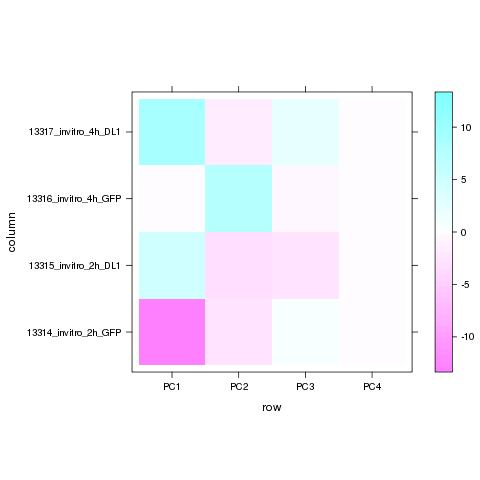

Exploratory analysis: PCA
Principal component analysis (PCA) (wikipedia) is a widly used technique used for eg data clustering and dimensionality reduction. We can think of the PCA as a way to find a simplified system with fewer dimensions that with good precision can explain our full data set. This requires tgae the data samples are correlated (which is often the case). The pca rotates the coordinate system so that in the new coordiantes the first axis covers the highest amount of variance between samples, the second axis will explain most of the remaining variance and so on. If some axis covers little variance, this means that this dimension contains little extra information and can be disregarded.
Samples used and their conditions:
| sample | 13314_invitro_2h_GFP | 13315_invitro_2h_DL1 | 13316_invitro_4h_GFP | 13317_invitro_4h_DL1 |
| condition | VIT | VIT | VITB | VITC |
Explained variance
This plot shows how much of the variance in the data that is captured by each of the principal components. By definition the first component will have the highest explanatory value, the second component the second most and so on. The final number of principal components will be the same as the number of samples put into the analysis. In general one is mainly interested in the principal componensts that have the hightest values as those are the most informative ones.

Sample scores on PCs
In the following levelplot we can see how the samples scores on the new coordinate system (principal components). Samples with high values of opposite signs are highly separated on that PC, whereas samples with values around 0 will fall in between. (Compare PC1 and PC2 rows with thw PCA plot below)

PC1 vs PC2 plot
Here I have ploted PC1 vs PC2. In most cases those will be the most interesting axes. If you compare the numbers on the axes with the levelplot above you will see that this plot is an alternative view of the first two columns in the levelplot. To view other PC combinations and to get a bit more detailed information use the Galaxy tool "PCA-analysis".
(Page generated on Wed Dec 11 13:56:56 2013 by hwriter 1.3)